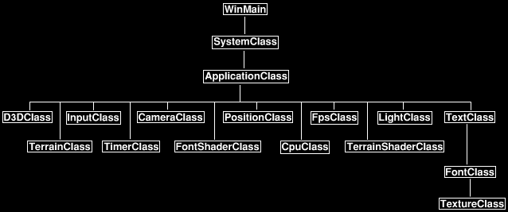
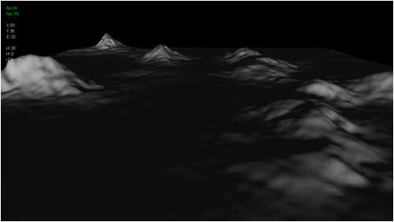

Tutorial 3: Terrain Lighting

This tutorial will cover how to implement directional lighting and shared normals for 3D terrain lighting. This tutorial is written in C++ using DirectX 11 and HLSL. The code in this tutorial builds on the previous terrain tutorial.
The first type of lighting we are going to implement for the terrain will be a combination of directional diffuse lighting and ambient lighting. The directional diffuse lighting equation is modeled after how sunlight illuminates the earth. So for the terrain engine this is the ideal form of light to start working with. Secondly we will combine ambient light into the light equation so that we slightly illuminate surfaces that are not illuminated by directional light. In this way we also simulate how bouncing light particles light up surfaces on the earth even though the surfaces are not directly illuminated by the sun.
We will also look at how to implement shared normals for creating smooth light transitions over terrain instead of having a faceted triangle look to the terrain which unshared normals usually produce.
Framework
The frame work has been updated to include a new TerrainShaderClass which replaces the ColorShaderClass that was used in the previous tutorials. The LightClass has also been included into the frame work to facilitate the directional diffuse lighting as well as the ambient lighting.

Terrain.vs
As the terrain is going to require its own specialized shading I have created a terrain vertex and pixel shader. Currently this shader is just the diffuse and ambient light shader from the DirectX tutorials section. However we will continue to modify it through the tutorials to create our finalized terrain shader.
////////////////////////////////////////////////////////////////////////////////
// Filename: terrain.vs
////////////////////////////////////////////////////////////////////////////////
/////////////
// GLOBALS //
/////////////
cbuffer MatrixBuffer
{
matrix worldMatrix;
matrix viewMatrix;
matrix projectionMatrix;
};
//////////////
// TYPEDEFS //
//////////////
struct VertexInputType
{
float4 position : POSITION;
float3 normal : NORMAL;
};
struct PixelInputType
{
float4 position : SV_POSITION;
float3 normal : NORMAL;
};
////////////////////////////////////////////////////////////////////////////////
// Vertex Shader
////////////////////////////////////////////////////////////////////////////////
PixelInputType TerrainVertexShader(VertexInputType input)
{
PixelInputType output;
// Change the position vector to be 4 units for proper matrix calculations.
input.position.w = 1.0f;
// Calculate the position of the vertex against the world, view, and projection matrices.
output.position = mul(input.position, worldMatrix);
output.position = mul(output.position, viewMatrix);
output.position = mul(output.position, projectionMatrix);
// Calculate the normal vector against the world matrix only.
output.normal = mul(input.normal, (float3x3)worldMatrix);
// Normalize the normal vector.
output.normal = normalize(output.normal);
return output;
}
Terrain.ps
////////////////////////////////////////////////////////////////////////////////
// Filename: terrain.ps
////////////////////////////////////////////////////////////////////////////////
/////////////
// GLOBALS //
/////////////
SamplerState SampleType;
cbuffer LightBuffer
{
float4 ambientColor;
float4 diffuseColor;
float3 lightDirection;
float padding;
};
//////////////
// TYPEDEFS //
//////////////
struct PixelInputType
{
float4 position : SV_POSITION;
float3 normal : NORMAL;
};
////////////////////////////////////////////////////////////////////////////////
// Pixel Shader
////////////////////////////////////////////////////////////////////////////////
float4 TerrainPixelShader(PixelInputType input) : SV_TARGET
{
float3 lightDir;
float lightIntensity;
float4 color;
// Set the default output color to the ambient light value for all pixels.
color = ambientColor;
// Invert the light direction for calculations.
lightDir = -lightDirection;
// Calculate the amount of light on this pixel.
lightIntensity = saturate(dot(input.normal, lightDir));
if(lightIntensity > 0.0f)
{
// Determine the final diffuse color based on the diffuse color and the amount of light intensity.
color += (diffuseColor * lightIntensity);
}
// Saturate the final light color.
color = saturate(color);
return color;
}
Terrainshaderclass.h
Once again since the terrain is going to require its own specialized shading I have created a terrain shader class for it. The TerrainShaderClass is just the LightShaderClass renamed from the diffuse and ambient lighting DirectX tutorials.
////////////////////////////////////////////////////////////////////////////////
// Filename: terrainshaderclass.h
////////////////////////////////////////////////////////////////////////////////
#ifndef _TERRAINSHADERCLASS_H_
#define _TERRAINSHADERCLASS_H_
//////////////
// INCLUDES //
//////////////
#include <d3d11.h>
#include <d3dx10math.h>
#include <d3dx11async.h>
#include <fstream>
using namespace std;
////////////////////////////////////////////////////////////////////////////////
// Class name: TerrainShaderClass
////////////////////////////////////////////////////////////////////////////////
class TerrainShaderClass
{
private:
struct MatrixBufferType
{
D3DXMATRIX world;
D3DXMATRIX view;
D3DXMATRIX projection;
};
struct LightBufferType
{
D3DXVECTOR4 ambientColor;
D3DXVECTOR4 diffuseColor;
D3DXVECTOR3 lightDirection;
float padding;
};
public:
TerrainShaderClass();
TerrainShaderClass(const TerrainShaderClass&);
~TerrainShaderClass();
bool Initialize(ID3D11Device*, HWND);
void Shutdown();
bool Render(ID3D11DeviceContext*, int, D3DXMATRIX, D3DXMATRIX, D3DXMATRIX, D3DXVECTOR4, D3DXVECTOR4, D3DXVECTOR3);
private:
bool InitializeShader(ID3D11Device*, HWND, WCHAR*, WCHAR*);
void ShutdownShader();
void OutputShaderErrorMessage(ID3D10Blob*, HWND, WCHAR*);
bool SetShaderParameters(ID3D11DeviceContext*, D3DXMATRIX, D3DXMATRIX, D3DXMATRIX, D3DXVECTOR4, D3DXVECTOR4, D3DXVECTOR3);
void RenderShader(ID3D11DeviceContext*, int);
private:
ID3D11VertexShader* m_vertexShader;
ID3D11PixelShader* m_pixelShader;
ID3D11InputLayout* m_layout;
ID3D11SamplerState* m_sampleState;
ID3D11Buffer* m_matrixBuffer;
ID3D11Buffer* m_lightBuffer;
};
#endif
Terrainshaderclass.cpp
////////////////////////////////////////////////////////////////////////////////
// Filename: terrainshaderclass.cpp
////////////////////////////////////////////////////////////////////////////////
#include "terrainshaderclass.h"
TerrainShaderClass::TerrainShaderClass()
{
m_vertexShader = 0;
m_pixelShader = 0;
m_layout = 0;
m_sampleState = 0;
m_matrixBuffer = 0;
m_lightBuffer = 0;
}
TerrainShaderClass::TerrainShaderClass(const TerrainShaderClass& other)
{
}
TerrainShaderClass::~TerrainShaderClass()
{
}
bool TerrainShaderClass::Initialize(ID3D11Device* device, HWND hwnd)
{
bool result;
// Initialize the vertex and pixel shaders.
result = InitializeShader(device, hwnd, L"../Engine/terrain.vs", L"../Engine/terrain.ps");
if(!result)
{
return false;
}
return true;
}
void TerrainShaderClass::Shutdown()
{
// Shutdown the vertex and pixel shaders as well as the related objects.
ShutdownShader();
return;
}
bool TerrainShaderClass::Render(ID3D11DeviceContext* deviceContext, int indexCount, D3DXMATRIX worldMatrix, D3DXMATRIX viewMatrix,
D3DXMATRIX projectionMatrix, D3DXVECTOR4 ambientColor, D3DXVECTOR4 diffuseColor, D3DXVECTOR3 lightDirection)
{
bool result;
// Set the shader parameters that it will use for rendering.
result = SetShaderParameters(deviceContext, worldMatrix, viewMatrix, projectionMatrix, ambientColor, diffuseColor, lightDirection);
if(!result)
{
return false;
}
// Now render the prepared buffers with the shader.
RenderShader(deviceContext, indexCount);
return true;
}
bool TerrainShaderClass::InitializeShader(ID3D11Device* device, HWND hwnd, WCHAR* vsFilename, WCHAR* psFilename)
{
HRESULT result;
ID3D10Blob* errorMessage;
ID3D10Blob* vertexShaderBuffer;
ID3D10Blob* pixelShaderBuffer;
D3D11_INPUT_ELEMENT_DESC polygonLayout[2];
unsigned int numElements;
D3D11_SAMPLER_DESC samplerDesc;
D3D11_BUFFER_DESC matrixBufferDesc;
D3D11_BUFFER_DESC lightBufferDesc;
// Initialize the pointers this function will use to null.
errorMessage = 0;
vertexShaderBuffer = 0;
pixelShaderBuffer = 0;
// Compile the vertex shader code.
result = D3DX11CompileFromFile(vsFilename, NULL, NULL, "TerrainVertexShader", "vs_5_0", D3D10_SHADER_ENABLE_STRICTNESS, 0, NULL,
&vertexShaderBuffer, &errorMessage, NULL);
if(FAILED(result))
{
// If the shader failed to compile it should have writen something to the error message.
if(errorMessage)
{
OutputShaderErrorMessage(errorMessage, hwnd, vsFilename);
}
// If there was nothing in the error message then it simply could not find the shader file itself.
else
{
MessageBox(hwnd, vsFilename, L"Missing Shader File", MB_OK);
}
return false;
}
// Compile the pixel shader code.
result = D3DX11CompileFromFile(psFilename, NULL, NULL, "TerrainPixelShader", "ps_5_0", D3D10_SHADER_ENABLE_STRICTNESS, 0, NULL,
&pixelShaderBuffer, &errorMessage, NULL);
if(FAILED(result))
{
// If the shader failed to compile it should have writen something to the error message.
if(errorMessage)
{
OutputShaderErrorMessage(errorMessage, hwnd, psFilename);
}
// If there was nothing in the error message then it simply could not find the file itself.
else
{
MessageBox(hwnd, psFilename, L"Missing Shader File", MB_OK);
}
return false;
}
// Create the vertex shader from the buffer.
result = device->CreateVertexShader(vertexShaderBuffer->GetBufferPointer(), vertexShaderBuffer->GetBufferSize(), NULL, &m_vertexShader);
if(FAILED(result))
{
return false;
}
// Create the pixel shader from the buffer.
result = device->CreatePixelShader(pixelShaderBuffer->GetBufferPointer(), pixelShaderBuffer->GetBufferSize(), NULL, &m_pixelShader);
if(FAILED(result))
{
return false;
}
// Create the vertex input layout description.
polygonLayout[0].SemanticName = "POSITION";
polygonLayout[0].SemanticIndex = 0;
polygonLayout[0].Format = DXGI_FORMAT_R32G32B32_FLOAT;
polygonLayout[0].InputSlot = 0;
polygonLayout[0].AlignedByteOffset = 0;
polygonLayout[0].InputSlotClass = D3D11_INPUT_PER_VERTEX_DATA;
polygonLayout[0].InstanceDataStepRate = 0;
polygonLayout[1].SemanticName = "NORMAL";
polygonLayout[1].SemanticIndex = 0;
polygonLayout[1].Format = DXGI_FORMAT_R32G32B32_FLOAT;
polygonLayout[1].InputSlot = 0;
polygonLayout[1].AlignedByteOffset = D3D11_APPEND_ALIGNED_ELEMENT;
polygonLayout[1].InputSlotClass = D3D11_INPUT_PER_VERTEX_DATA;
polygonLayout[1].InstanceDataStepRate = 0;
// Get a count of the elements in the layout.
numElements = sizeof(polygonLayout) / sizeof(polygonLayout[0]);
// Create the vertex input layout.
result = device->CreateInputLayout(polygonLayout, numElements, vertexShaderBuffer->GetBufferPointer(), vertexShaderBuffer->GetBufferSize(),
&m_layout);
if(FAILED(result))
{
return false;
}
// Release the vertex shader buffer and pixel shader buffer since they are no longer needed.
vertexShaderBuffer->Release();
vertexShaderBuffer = 0;
pixelShaderBuffer->Release();
pixelShaderBuffer = 0;
// Create a texture sampler state description.
samplerDesc.Filter = D3D11_FILTER_MIN_MAG_MIP_LINEAR;
samplerDesc.AddressU = D3D11_TEXTURE_ADDRESS_WRAP;
samplerDesc.AddressV = D3D11_TEXTURE_ADDRESS_WRAP;
samplerDesc.AddressW = D3D11_TEXTURE_ADDRESS_WRAP;
samplerDesc.MipLODBias = 0.0f;
samplerDesc.MaxAnisotropy = 1;
samplerDesc.ComparisonFunc = D3D11_COMPARISON_ALWAYS;
samplerDesc.BorderColor[0] = 0;
samplerDesc.BorderColor[1] = 0;
samplerDesc.BorderColor[2] = 0;
samplerDesc.BorderColor[3] = 0;
samplerDesc.MinLOD = 0;
samplerDesc.MaxLOD = D3D11_FLOAT32_MAX;
// Create the texture sampler state.
result = device->CreateSamplerState(&samplerDesc, &m_sampleState);
if(FAILED(result))
{
return false;
}
// Setup the description of the dynamic matrix constant buffer that is in the vertex shader.
matrixBufferDesc.Usage = D3D11_USAGE_DYNAMIC;
matrixBufferDesc.ByteWidth = sizeof(MatrixBufferType);
matrixBufferDesc.BindFlags = D3D11_BIND_CONSTANT_BUFFER;
matrixBufferDesc.CPUAccessFlags = D3D11_CPU_ACCESS_WRITE;
matrixBufferDesc.MiscFlags = 0;
matrixBufferDesc.StructureByteStride = 0;
// Create the constant buffer pointer so we can access the vertex shader constant buffer from within this class.
result = device->CreateBuffer(&matrixBufferDesc, NULL, &m_matrixBuffer);
if(FAILED(result))
{
return false;
}
// Setup the description of the light dynamic constant buffer that is in the pixel shader.
// Note that ByteWidth always needs to be a multiple of 16 if using D3D11_BIND_CONSTANT_BUFFER or CreateBuffer will fail.
lightBufferDesc.Usage = D3D11_USAGE_DYNAMIC;
lightBufferDesc.ByteWidth = sizeof(LightBufferType);
lightBufferDesc.BindFlags = D3D11_BIND_CONSTANT_BUFFER;
lightBufferDesc.CPUAccessFlags = D3D11_CPU_ACCESS_WRITE;
lightBufferDesc.MiscFlags = 0;
lightBufferDesc.StructureByteStride = 0;
// Create the constant buffer pointer so we can access the vertex shader constant buffer from within this class.
result = device->CreateBuffer(&lightBufferDesc, NULL, &m_lightBuffer);
if(FAILED(result))
{
return false;
}
return true;
}
void TerrainShaderClass::ShutdownShader()
{
// Release the light constant buffer.
if(m_lightBuffer)
{
m_lightBuffer->Release();
m_lightBuffer = 0;
}
// Release the matrix constant buffer.
if(m_matrixBuffer)
{
m_matrixBuffer->Release();
m_matrixBuffer = 0;
}
// Release the sampler state.
if(m_sampleState)
{
m_sampleState->Release();
m_sampleState = 0;
}
// Release the layout.
if(m_layout)
{
m_layout->Release();
m_layout = 0;
}
// Release the pixel shader.
if(m_pixelShader)
{
m_pixelShader->Release();
m_pixelShader = 0;
}
// Release the vertex shader.
if(m_vertexShader)
{
m_vertexShader->Release();
m_vertexShader = 0;
}
return;
}
void TerrainShaderClass::OutputShaderErrorMessage(ID3D10Blob* errorMessage, HWND hwnd, WCHAR* shaderFilename)
{
char* compileErrors;
unsigned long bufferSize, i;
ofstream fout;
// Get a pointer to the error message text buffer.
compileErrors = (char*)(errorMessage->GetBufferPointer());
// Get the length of the message.
bufferSize = errorMessage->GetBufferSize();
// Open a file to write the error message to.
fout.open("shader-error.txt");
// Write out the error message.
for(i=0; i<bufferSize; i++)
{
fout << compileErrors[i];
}
// Close the file.
fout.close();
// Release the error message.
errorMessage->Release();
errorMessage = 0;
// Pop a message up on the screen to notify the user to check the text file for compile errors.
MessageBox(hwnd, L"Error compiling shader. Check shader-error.txt for message.", shaderFilename, MB_OK);
return;
}
bool TerrainShaderClass::SetShaderParameters(ID3D11DeviceContext* deviceContext, D3DXMATRIX worldMatrix, D3DXMATRIX viewMatrix,
D3DXMATRIX projectionMatrix, D3DXVECTOR4 ambientColor, D3DXVECTOR4 diffuseColor, D3DXVECTOR3 lightDirection)
{
HRESULT result;
D3D11_MAPPED_SUBRESOURCE mappedResource;
unsigned int bufferNumber;
MatrixBufferType* dataPtr;
LightBufferType* dataPtr2;
// Transpose the matrices to prepare them for the shader.
D3DXMatrixTranspose(&worldMatrix, &worldMatrix);
D3DXMatrixTranspose(&viewMatrix, &viewMatrix);
D3DXMatrixTranspose(&projectionMatrix, &projectionMatrix);
// Lock the constant buffer so it can be written to.
result = deviceContext->Map(m_matrixBuffer, 0, D3D11_MAP_WRITE_DISCARD, 0, &mappedResource);
if(FAILED(result))
{
return false;
}
// Get a pointer to the data in the constant buffer.
dataPtr = (MatrixBufferType*)mappedResource.pData;
// Copy the matrices into the constant buffer.
dataPtr->world = worldMatrix;
dataPtr->view = viewMatrix;
dataPtr->projection = projectionMatrix;
// Unlock the constant buffer.
deviceContext->Unmap(m_matrixBuffer, 0);
// Set the position of the constant buffer in the vertex shader.
bufferNumber = 0;
// Now set the constant buffer in the vertex shader with the updated values.
deviceContext->VSSetConstantBuffers(bufferNumber, 1, &m_matrixBuffer);
// Lock the light constant buffer so it can be written to.
result = deviceContext->Map(m_lightBuffer, 0, D3D11_MAP_WRITE_DISCARD, 0, &mappedResource);
if(FAILED(result))
{
return false;
}
// Get a pointer to the data in the constant buffer.
dataPtr2 = (LightBufferType*)mappedResource.pData;
// Copy the lighting variables into the constant buffer.
dataPtr2->ambientColor = ambientColor;
dataPtr2->diffuseColor = diffuseColor;
dataPtr2->lightDirection = lightDirection;
dataPtr2->padding = 0.0f;
// Unlock the constant buffer.
deviceContext->Unmap(m_lightBuffer, 0);
// Set the position of the light constant buffer in the pixel shader.
bufferNumber = 0;
// Finally set the light constant buffer in the pixel shader with the updated values.
deviceContext->PSSetConstantBuffers(bufferNumber, 1, &m_lightBuffer);
return true;
}
void TerrainShaderClass::RenderShader(ID3D11DeviceContext* deviceContext, int indexCount)
{
// Set the vertex input layout.
deviceContext->IASetInputLayout(m_layout);
// Set the vertex and pixel shaders that will be used to render this triangle.
deviceContext->VSSetShader(m_vertexShader, NULL, 0);
deviceContext->PSSetShader(m_pixelShader, NULL, 0);
// Set the sampler state in the pixel shader.
deviceContext->PSSetSamplers(0, 1, &m_sampleState);
// Render the triangle.
deviceContext->DrawIndexed(indexCount, 0, 0);
return;
}
Terrainclass.h
The TerrainClass has had a number of changes to it so that it can accommodate illuminating the terrain.
////////////////////////////////////////////////////////////////////////////////
// Filename: terrainclass.h
////////////////////////////////////////////////////////////////////////////////
#ifndef _TERRAINCLASS_H_
#define _TERRAINCLASS_H_
//////////////
// INCLUDES //
//////////////
#include <d3d11.h>
#include <d3dx10math.h>
#include <stdio.h>
////////////////////////////////////////////////////////////////////////////////
// Class name: TerrainClass
////////////////////////////////////////////////////////////////////////////////
class TerrainClass
{
private:
The VertexType now has a normal vector instead of a color vector.
struct VertexType
{
D3DXVECTOR3 position;
D3DXVECTOR3 normal;
};
The HeightMapType now has normals as well.
struct HeightMapType
{
float x, y, z;
float nx, ny, nz;
};
VectorType is a new structure that will be used for calculating shared lighting.
struct VectorType
{
float x, y, z;
};
public:
TerrainClass();
TerrainClass(const TerrainClass&);
~TerrainClass();
bool Initialize(ID3D11Device*, char*);
void Shutdown();
void Render(ID3D11DeviceContext*);
int GetIndexCount();
private:
bool LoadHeightMap(char*);
void NormalizeHeightMap();
CalculateNormals is a new function for calculating shared normals after a height map has been loaded in.
bool CalculateNormals(); void ShutdownHeightMap(); bool InitializeBuffers(ID3D11Device*); void ShutdownBuffers(); void RenderBuffers(ID3D11DeviceContext*); private: int m_terrainWidth, m_terrainHeight; int m_vertexCount, m_indexCount; ID3D11Buffer *m_vertexBuffer, *m_indexBuffer; HeightMapType* m_heightMap; }; #endif
Terrainclass.cpp
////////////////////////////////////////////////////////////////////////////////
// Filename: terrainclass.cpp
////////////////////////////////////////////////////////////////////////////////
#include "terrainclass.h"
TerrainClass::TerrainClass()
{
m_vertexBuffer = 0;
m_indexBuffer = 0;
m_heightMap = 0;
}
TerrainClass::TerrainClass(const TerrainClass& other)
{
}
TerrainClass::~TerrainClass()
{
}
bool TerrainClass::Initialize(ID3D11Device* device, char* heightMapFilename)
{
bool result;
// Load in the height map for the terrain.
result = LoadHeightMap(heightMapFilename);
if(!result)
{
return false;
}
// Normalize the height of the height map.
NormalizeHeightMap();
After the height map has been loaded and the height has been reduced we then call CalculateNormals to calculate shared normals for lighting. The shared normals will be stored in the updated height map structure.
// Calculate the normals for the terrain data.
result = CalculateNormals();
if(!result)
{
return false;
}
// Initialize the vertex and index buffer that hold the geometry for the terrain.
result = InitializeBuffers(device);
if(!result)
{
return false;
}
return true;
}
void TerrainClass::Shutdown()
{
// Release the vertex and index buffer.
ShutdownBuffers();
// Release the height map data.
ShutdownHeightMap();
return;
}
void TerrainClass::Render(ID3D11DeviceContext* deviceContext)
{
// Put the vertex and index buffers on the graphics pipeline to prepare them for drawing.
RenderBuffers(deviceContext);
return;
}
int TerrainClass::GetIndexCount()
{
return m_indexCount;
}
bool TerrainClass::LoadHeightMap(char* filename)
{
FILE* filePtr;
int error;
unsigned int count;
BITMAPFILEHEADER bitmapFileHeader;
BITMAPINFOHEADER bitmapInfoHeader;
int imageSize, i, j, k, index;
unsigned char* bitmapImage;
unsigned char height;
// Open the height map file in binary.
error = fopen_s(&filePtr, filename, "rb");
if(error != 0)
{
return false;
}
// Read in the file header.
count = fread(&bitmapFileHeader, sizeof(BITMAPFILEHEADER), 1, filePtr);
if(count != 1)
{
return false;
}
// Read in the bitmap info header.
count = fread(&bitmapInfoHeader, sizeof(BITMAPINFOHEADER), 1, filePtr);
if(count != 1)
{
return false;
}
// Save the dimensions of the terrain.
m_terrainWidth = bitmapInfoHeader.biWidth;
m_terrainHeight = bitmapInfoHeader.biHeight;
// Calculate the size of the bitmap image data.
imageSize = m_terrainWidth * m_terrainHeight * 3;
// Allocate memory for the bitmap image data.
bitmapImage = new unsigned char[imageSize];
if(!bitmapImage)
{
return false;
}
// Move to the beginning of the bitmap data.
fseek(filePtr, bitmapFileHeader.bfOffBits, SEEK_SET);
// Read in the bitmap image data.
count = fread(bitmapImage, 1, imageSize, filePtr);
if(count != imageSize)
{
return false;
}
// Close the file.
error = fclose(filePtr);
if(error != 0)
{
return false;
}
// Create the structure to hold the height map data.
m_heightMap = new HeightMapType[m_terrainWidth * m_terrainHeight];
if(!m_heightMap)
{
return false;
}
// Initialize the position in the image data buffer.
k=0;
// Read the image data into the height map.
for(j=0; j<m_terrainHeight; j++)
{
for(i=0; i<m_terrainWidth; i++)
{
height = bitmapImage[k];
index = (m_terrainHeight * j) + i;
m_heightMap[index].x = (float)i;
m_heightMap[index].y = (float)height;
m_heightMap[index].z = (float)j;
k+=3;
}
}
// Release the bitmap image data.
delete [] bitmapImage;
bitmapImage = 0;
return true;
}
void TerrainClass::NormalizeHeightMap()
{
int i, j;
for(j=0; j<m_terrainHeight; j++)
{
for(i=0; i<m_terrainWidth; i++)
{
m_heightMap[(m_terrainHeight * j) + i].y /= 15.0f;
}
}
return;
}
To calculate shared normals you have to go through each vertex in the terrain grid and take an average of the normals for each face that the vertex is a part of. Then each vertex in the grid will now be averaged to everything around it creating less abrupt changes in light direction giving the illusion of smoother surfaces. This technique works well with any smooth or semi-smooth polygon surface. However it does not work well with surfaces that have sharp edges such as a cube.
bool TerrainClass::CalculateNormals()
{
int i, j, index1, index2, index3, index, count;
float vertex1[3], vertex2[3], vertex3[3], vector1[3], vector2[3], sum[3], length;
VectorType* normals;
// Create a temporary array to hold the un-normalized normal vectors.
normals = new VectorType[(m_terrainHeight-1) * (m_terrainWidth-1)];
if(!normals)
{
return false;
}
// Go through all the faces in the mesh and calculate their normals.
for(j=0; j<(m_terrainHeight-1); j++)
{
for(i=0; i<(m_terrainWidth-1); i++)
{
index1 = (j * m_terrainHeight) + i;
index2 = (j * m_terrainHeight) + (i+1);
index3 = ((j+1) * m_terrainHeight) + i;
// Get three vertices from the face.
vertex1[0] = m_heightMap[index1].x;
vertex1[1] = m_heightMap[index1].y;
vertex1[2] = m_heightMap[index1].z;
vertex2[0] = m_heightMap[index2].x;
vertex2[1] = m_heightMap[index2].y;
vertex2[2] = m_heightMap[index2].z;
vertex3[0] = m_heightMap[index3].x;
vertex3[1] = m_heightMap[index3].y;
vertex3[2] = m_heightMap[index3].z;
// Calculate the two vectors for this face.
vector1[0] = vertex1[0] - vertex3[0];
vector1[1] = vertex1[1] - vertex3[1];
vector1[2] = vertex1[2] - vertex3[2];
vector2[0] = vertex3[0] - vertex2[0];
vector2[1] = vertex3[1] - vertex2[1];
vector2[2] = vertex3[2] - vertex2[2];
index = (j * (m_terrainHeight-1)) + i;
// Calculate the cross product of those two vectors to get the un-normalized value for this face normal.
normals[index].x = (vector1[1] * vector2[2]) - (vector1[2] * vector2[1]);
normals[index].y = (vector1[2] * vector2[0]) - (vector1[0] * vector2[2]);
normals[index].z = (vector1[0] * vector2[1]) - (vector1[1] * vector2[0]);
}
}
// Now go through all the vertices and take an average of each face normal
// that the vertex touches to get the averaged normal for that vertex.
for(j=0; j<m_terrainHeight; j++)
{
for(i=0; i<m_terrainWidth; i++)
{
// Initialize the sum.
sum[0] = 0.0f;
sum[1] = 0.0f;
sum[2] = 0.0f;
// Initialize the count.
count = 0;
// Bottom left face.
if(((i-1) >= 0) && ((j-1) >= 0))
{
index = ((j-1) * (m_terrainHeight-1)) + (i-1);
sum[0] += normals[index].x;
sum[1] += normals[index].y;
sum[2] += normals[index].z;
count++;
}
// Bottom right face.
if((i < (m_terrainWidth-1)) && ((j-1) >= 0))
{
index = ((j-1) * (m_terrainHeight-1)) + i;
sum[0] += normals[index].x;
sum[1] += normals[index].y;
sum[2] += normals[index].z;
count++;
}
// Upper left face.
if(((i-1) >= 0) && (j < (m_terrainHeight-1)))
{
index = (j * (m_terrainHeight-1)) + (i-1);
sum[0] += normals[index].x;
sum[1] += normals[index].y;
sum[2] += normals[index].z;
count++;
}
// Upper right face.
if((i < (m_terrainWidth-1)) && (j < (m_terrainHeight-1)))
{
index = (j * (m_terrainHeight-1)) + i;
sum[0] += normals[index].x;
sum[1] += normals[index].y;
sum[2] += normals[index].z;
count++;
}
// Take the average of the faces touching this vertex.
sum[0] = (sum[0] / (float)count);
sum[1] = (sum[1] / (float)count);
sum[2] = (sum[2] / (float)count);
// Calculate the length of this normal.
length = sqrt((sum[0] * sum[0]) + (sum[1] * sum[1]) + (sum[2] * sum[2]));
// Get an index to the vertex location in the height map array.
index = (j * m_terrainHeight) + i;
// Normalize the final shared normal for this vertex and store it in the height map array.
m_heightMap[index].nx = (sum[0] / length);
m_heightMap[index].ny = (sum[1] / length);
m_heightMap[index].nz = (sum[2] / length);
}
}
// Release the temporary normals.
delete [] normals;
normals = 0;
return true;
}
void TerrainClass::ShutdownHeightMap()
{
if(m_heightMap)
{
delete [] m_heightMap;
m_heightMap = 0;
}
return;
}
The InitializeBuffers function has also been changed to accommodate normal vectors and triangles instead of color vectors and line lists.
bool TerrainClass::InitializeBuffers(ID3D11Device* device)
{
VertexType* vertices;
unsigned long* indices;
int index, i, j;
D3D11_BUFFER_DESC vertexBufferDesc, indexBufferDesc;
D3D11_SUBRESOURCE_DATA vertexData, indexData;
HRESULT result;
int index1, index2, index3, index4;
The mesh is now made up of two triangles per quad. Therefore only six vertices for each quad is needed.
// Calculate the number of vertices in the terrain mesh.
m_vertexCount = (m_terrainWidth - 1) * (m_terrainHeight - 1) * 6;
// Set the index count to the same as the vertex count.
m_indexCount = m_vertexCount;
// Create the vertex array.
vertices = new VertexType[m_vertexCount];
if(!vertices)
{
return false;
}
// Create the index array.
indices = new unsigned long[m_indexCount];
if(!indices)
{
return false;
}
// Initialize the index to the vertex buffer.
index = 0;
As we loop through and fill the vertex and index buffer with data we now supply a normal vector instead of a color vector. Also the quad is now made up of two triangles instead of a line list with eight points. The vertices for each triangle must be stored in clockwise order as well.
// Load the vertex and index array with the terrain data.
for(j=0; j<(m_terrainHeight-1); j++)
{
for(i=0; i<(m_terrainWidth-1); i++)
{
index1 = (m_terrainHeight * j) + i; // Bottom left.
index2 = (m_terrainHeight * j) + (i+1); // Bottom right.
index3 = (m_terrainHeight * (j+1)) + i; // Upper left.
index4 = (m_terrainHeight * (j+1)) + (i+1); // Upper right.
// Upper left.
vertices[index].position = D3DXVECTOR3(m_heightMap[index3].x, m_heightMap[index3].y, m_heightMap[index3].z);
vertices[index].normal = D3DXVECTOR3(m_heightMap[index3].nx, m_heightMap[index3].ny, m_heightMap[index3].nz);
indices[index] = index;
index++;
// Upper right.
vertices[index].position = D3DXVECTOR3(m_heightMap[index4].x, m_heightMap[index4].y, m_heightMap[index4].z);
vertices[index].normal = D3DXVECTOR3(m_heightMap[index4].nx, m_heightMap[index4].ny, m_heightMap[index4].nz);
indices[index] = index;
index++;
// Bottom left.
vertices[index].position = D3DXVECTOR3(m_heightMap[index1].x, m_heightMap[index1].y, m_heightMap[index1].z);
vertices[index].normal = D3DXVECTOR3(m_heightMap[index1].nx, m_heightMap[index1].ny, m_heightMap[index1].nz);
indices[index] = index;
index++;
// Bottom left.
vertices[index].position = D3DXVECTOR3(m_heightMap[index1].x, m_heightMap[index1].y, m_heightMap[index1].z);
vertices[index].normal = D3DXVECTOR3(m_heightMap[index1].nx, m_heightMap[index1].ny, m_heightMap[index1].nz);
indices[index] = index;
index++;
// Upper right.
vertices[index].position = D3DXVECTOR3(m_heightMap[index4].x, m_heightMap[index4].y, m_heightMap[index4].z);
vertices[index].normal = D3DXVECTOR3(m_heightMap[index4].nx, m_heightMap[index4].ny, m_heightMap[index4].nz);
indices[index] = index;
index++;
// Bottom right.
vertices[index].position = D3DXVECTOR3(m_heightMap[index2].x, m_heightMap[index2].y, m_heightMap[index2].z);
vertices[index].normal = D3DXVECTOR3(m_heightMap[index2].nx, m_heightMap[index2].ny, m_heightMap[index2].nz);
indices[index] = index;
index++;
}
}
// Set up the description of the static vertex buffer.
vertexBufferDesc.Usage = D3D11_USAGE_DEFAULT;
vertexBufferDesc.ByteWidth = sizeof(VertexType) * m_vertexCount;
vertexBufferDesc.BindFlags = D3D11_BIND_VERTEX_BUFFER;
vertexBufferDesc.CPUAccessFlags = 0;
vertexBufferDesc.MiscFlags = 0;
vertexBufferDesc.StructureByteStride = 0;
// Give the subresource structure a pointer to the vertex data.
vertexData.pSysMem = vertices;
vertexData.SysMemPitch = 0;
vertexData.SysMemSlicePitch = 0;
// Now create the vertex buffer.
result = device->CreateBuffer(&vertexBufferDesc, &vertexData, &m_vertexBuffer);
if(FAILED(result))
{
return false;
}
// Set up the description of the static index buffer.
indexBufferDesc.Usage = D3D11_USAGE_DEFAULT;
indexBufferDesc.ByteWidth = sizeof(unsigned long) * m_indexCount;
indexBufferDesc.BindFlags = D3D11_BIND_INDEX_BUFFER;
indexBufferDesc.CPUAccessFlags = 0;
indexBufferDesc.MiscFlags = 0;
indexBufferDesc.StructureByteStride = 0;
// Give the subresource structure a pointer to the index data.
indexData.pSysMem = indices;
indexData.SysMemPitch = 0;
indexData.SysMemSlicePitch = 0;
// Create the index buffer.
result = device->CreateBuffer(&indexBufferDesc, &indexData, &m_indexBuffer);
if(FAILED(result))
{
return false;
}
// Release the arrays now that the buffers have been created and loaded.
delete [] vertices;
vertices = 0;
delete [] indices;
indices = 0;
return true;
}
void TerrainClass::ShutdownBuffers()
{
// Release the index buffer.
if(m_indexBuffer)
{
m_indexBuffer->Release();
m_indexBuffer = 0;
}
// Release the vertex buffer.
if(m_vertexBuffer)
{
m_vertexBuffer->Release();
m_vertexBuffer = 0;
}
return;
}
void TerrainClass::RenderBuffers(ID3D11DeviceContext* deviceContext)
{
unsigned int stride;
unsigned int offset;
// Set vertex buffer stride and offset.
stride = sizeof(VertexType);
offset = 0;
// Set the vertex buffer to active in the input assembler so it can be rendered.
deviceContext->IASetVertexBuffers(0, 1, &m_vertexBuffer, &stride, &offset);
// Set the index buffer to active in the input assembler so it can be rendered.
deviceContext->IASetIndexBuffer(m_indexBuffer, DXGI_FORMAT_R32_UINT, 0);
When rendering the terrain we now draw triangle lists instead of line lists.
// Set the type of primitive that should be rendered from this vertex buffer, in this case triangles. deviceContext->IASetPrimitiveTopology(D3D11_PRIMITIVE_TOPOLOGY_TRIANGLELIST); return; }
Applicationclass.h
//////////////////////////////////////////////////////////////////////////////// // Filename: applicationclass.h //////////////////////////////////////////////////////////////////////////////// #ifndef _APPLICATIONCLASS_H_ #define _APPLICATIONCLASS_H_ ///////////// // GLOBALS // ///////////// const bool FULL_SCREEN = true; const bool VSYNC_ENABLED = true; const float SCREEN_DEPTH = 1000.0f; const float SCREEN_NEAR = 0.1f; /////////////////////// // MY CLASS INCLUDES // /////////////////////// #include "inputclass.h" #include "d3dclass.h" #include "cameraclass.h" #include "terrainclass.h" #include "timerclass.h" #include "positionclass.h" #include "fpsclass.h" #include "cpuclass.h" #include "fontshaderclass.h" #include "textclass.h"
We now include the headers for the new TerrainShaderClass and the LightClass from the DirectX tutorials.
#include "terrainshaderclass.h"
#include "lightclass.h"
////////////////////////////////////////////////////////////////////////////////
// Class name: ApplicationClass
////////////////////////////////////////////////////////////////////////////////
class ApplicationClass
{
public:
ApplicationClass();
ApplicationClass(const ApplicationClass&);
~ApplicationClass();
bool Initialize(HINSTANCE, HWND, int, int);
void Shutdown();
bool Frame();
private:
bool HandleInput(float);
bool RenderGraphics();
private:
InputClass* m_Input;
D3DClass* m_Direct3D;
CameraClass* m_Camera;
TerrainClass* m_Terrain;
TimerClass* m_Timer;
PositionClass* m_Position;
FpsClass* m_Fps;
CpuClass* m_Cpu;
FontShaderClass* m_FontShader;
TextClass* m_Text;
The new TerrainShaderClass and LightClass objects are added to the private variable section of the ApplicationClass.
TerrainShaderClass* m_TerrainShader; LightClass* m_Light; }; #endif
Applicationclass.cpp
////////////////////////////////////////////////////////////////////////////////
// Filename: applicationclass.cpp
////////////////////////////////////////////////////////////////////////////////
#include "applicationclass.h"
ApplicationClass::ApplicationClass()
{
m_Input = 0;
m_Direct3D = 0;
m_Camera = 0;
m_Terrain = 0;
m_Timer = 0;
m_Position = 0;
m_Fps = 0;
m_Cpu = 0;
m_FontShader = 0;
m_Text = 0;
Initialize the new TerrainShaderClass and LightClass objects to null in the class constructor.
m_TerrainShader = 0;
m_Light = 0;
}
ApplicationClass::ApplicationClass(const ApplicationClass& other)
{
}
ApplicationClass::~ApplicationClass()
{
}
bool ApplicationClass::Initialize(HINSTANCE hinstance, HWND hwnd, int screenWidth, int screenHeight)
{
bool result;
float cameraX, cameraY, cameraZ;
D3DXMATRIX baseViewMatrix;
char videoCard[128];
int videoMemory;
// Create the input object. The input object will be used to handle reading the keyboard and mouse input from the user.
m_Input = new InputClass;
if(!m_Input)
{
return false;
}
// Initialize the input object.
result = m_Input->Initialize(hinstance, hwnd, screenWidth, screenHeight);
if(!result)
{
MessageBox(hwnd, L"Could not initialize the input object.", L"Error", MB_OK);
return false;
}
// Create the Direct3D object.
m_Direct3D = new D3DClass;
if(!m_Direct3D)
{
return false;
}
// Initialize the Direct3D object.
result = m_Direct3D->Initialize(screenWidth, screenHeight, VSYNC_ENABLED, hwnd, FULL_SCREEN, SCREEN_DEPTH, SCREEN_NEAR);
if(!result)
{
MessageBox(hwnd, L"Could not initialize DirectX 11.", L"Error", MB_OK);
return false;
}
// Create the camera object.
m_Camera = new CameraClass;
if(!m_Camera)
{
return false;
}
// Initialize a base view matrix with the camera for 2D user interface rendering.
m_Camera->SetPosition(0.0f, 0.0f, -1.0f);
m_Camera->Render();
m_Camera->GetViewMatrix(baseViewMatrix);
// Set the initial position of the camera.
cameraX = 50.0f;
cameraY = 2.0f;
cameraZ = -7.0f;
m_Camera->SetPosition(cameraX, cameraY, cameraZ);
// Create the terrain object.
m_Terrain = new TerrainClass;
if(!m_Terrain)
{
return false;
}
// Initialize the terrain object.
result = m_Terrain->Initialize(m_Direct3D->GetDevice(), "../Engine/data/heightmap01.bmp");
if(!result)
{
MessageBox(hwnd, L"Could not initialize the terrain object.", L"Error", MB_OK);
return false;
}
// Create the timer object.
m_Timer = new TimerClass;
if(!m_Timer)
{
return false;
}
// Initialize the timer object.
result = m_Timer->Initialize();
if(!result)
{
MessageBox(hwnd, L"Could not initialize the timer object.", L"Error", MB_OK);
return false;
}
// Create the position object.
m_Position = new PositionClass;
if(!m_Position)
{
return false;
}
// Set the initial position of the viewer to the same as the initial camera position.
m_Position->SetPosition(cameraX, cameraY, cameraZ);
// Create the fps object.
m_Fps = new FpsClass;
if(!m_Fps)
{
return false;
}
// Initialize the fps object.
m_Fps->Initialize();
// Create the cpu object.
m_Cpu = new CpuClass;
if(!m_Cpu)
{
return false;
}
// Initialize the cpu object.
m_Cpu->Initialize();
// Create the font shader object.
m_FontShader = new FontShaderClass;
if(!m_FontShader)
{
return false;
}
// Initialize the font shader object.
result = m_FontShader->Initialize(m_Direct3D->GetDevice(), hwnd);
if(!result)
{
MessageBox(hwnd, L"Could not initialize the font shader object.", L"Error", MB_OK);
return false;
}
// Create the text object.
m_Text = new TextClass;
if(!m_Text)
{
return false;
}
// Initialize the text object.
result = m_Text->Initialize(m_Direct3D->GetDevice(), m_Direct3D->GetDeviceContext(), hwnd, screenWidth, screenHeight, baseViewMatrix);
if(!result)
{
MessageBox(hwnd, L"Could not initialize the text object.", L"Error", MB_OK);
return false;
}
// Retrieve the video card information.
m_Direct3D->GetVideoCardInfo(videoCard, videoMemory);
// Set the video card information in the text object.
result = m_Text->SetVideoCardInfo(videoCard, videoMemory, m_Direct3D->GetDeviceContext());
if(!result)
{
MessageBox(hwnd, L"Could not set video card info in the text object.", L"Error", MB_OK);
return false;
}
Create and initialize the terrain shader class object.
// Create the terrain shader object.
m_TerrainShader = new TerrainShaderClass;
if(!m_TerrainShader)
{
return false;
}
// Initialize the terrain shader object.
result = m_TerrainShader->Initialize(m_Direct3D->GetDevice(), hwnd);
if(!result)
{
MessageBox(hwnd, L"Could not initialize the terrain shader object.", L"Error", MB_OK);
return false;
}
Create and initialize the light class object.
// Create the light object.
m_Light = new LightClass;
if(!m_Light)
{
return false;
}
// Initialize the light object.
m_Light->SetAmbientColor(0.05f, 0.05f, 0.05f, 1.0f);
m_Light->SetDiffuseColor(1.0f, 1.0f, 1.0f, 1.0f);
m_Light->SetDirection(0.0f, 0.0f, 0.75f);
return true;
}
void ApplicationClass::Shutdown()
{
Release the light and terrain shader objects in the Shutdown function.
// Release the light object.
if(m_Light)
{
delete m_Light;
m_Light = 0;
}
// Release the terrain shader object.
if(m_TerrainShader)
{
m_TerrainShader->Shutdown();
delete m_TerrainShader;
m_TerrainShader = 0;
}
// Release the text object.
if(m_Text)
{
m_Text->Shutdown();
delete m_Text;
m_Text = 0;
}
// Release the font shader object.
if(m_FontShader)
{
m_FontShader->Shutdown();
delete m_FontShader;
m_FontShader = 0;
}
// Release the cpu object.
if(m_Cpu)
{
m_Cpu->Shutdown();
delete m_Cpu;
m_Cpu = 0;
}
// Release the fps object.
if(m_Fps)
{
delete m_Fps;
m_Fps = 0;
}
// Release the position object.
if(m_Position)
{
delete m_Position;
m_Position = 0;
}
// Release the timer object.
if(m_Timer)
{
delete m_Timer;
m_Timer = 0;
}
// Release the terrain object.
if(m_Terrain)
{
m_Terrain->Shutdown();
delete m_Terrain;
m_Terrain = 0;
}
// Release the camera object.
if(m_Camera)
{
delete m_Camera;
m_Camera = 0;
}
// Release the Direct3D object.
if(m_Direct3D)
{
m_Direct3D->Shutdown();
delete m_Direct3D;
m_Direct3D = 0;
}
// Release the input object.
if(m_Input)
{
m_Input->Shutdown();
delete m_Input;
m_Input = 0;
}
return;
}
bool ApplicationClass::Frame()
{
bool result;
// Read the user input.
result = m_Input->Frame();
if(!result)
{
return false;
}
// Check if the user pressed escape and wants to exit the application.
if(m_Input->IsEscapePressed() == true)
{
return false;
}
// Update the system stats.
m_Timer->Frame();
m_Fps->Frame();
m_Cpu->Frame();
// Update the FPS value in the text object.
result = m_Text->SetFps(m_Fps->GetFps(), m_Direct3D->GetDeviceContext());
if(!result)
{
return false;
}
// Update the CPU usage value in the text object.
result = m_Text->SetCpu(m_Cpu->GetCpuPercentage(), m_Direct3D->GetDeviceContext());
if(!result)
{
return false;
}
// Do the frame input processing.
result = HandleInput(m_Timer->GetTime());
if(!result)
{
return false;
}
// Render the graphics.
result = RenderGraphics();
if(!result)
{
return false;
}
return result;
}
bool ApplicationClass::HandleInput(float frameTime)
{
bool keyDown, result;
float posX, posY, posZ, rotX, rotY, rotZ;
// Set the frame time for calculating the updated position.
m_Position->SetFrameTime(frameTime);
// Handle the input.
keyDown = m_Input->IsLeftPressed();
m_Position->TurnLeft(keyDown);
keyDown = m_Input->IsRightPressed();
m_Position->TurnRight(keyDown);
keyDown = m_Input->IsUpPressed();
m_Position->MoveForward(keyDown);
keyDown = m_Input->IsDownPressed();
m_Position->MoveBackward(keyDown);
keyDown = m_Input->IsAPressed();
m_Position->MoveUpward(keyDown);
keyDown = m_Input->IsZPressed();
m_Position->MoveDownward(keyDown);
keyDown = m_Input->IsPgUpPressed();
m_Position->LookUpward(keyDown);
keyDown = m_Input->IsPgDownPressed();
m_Position->LookDownward(keyDown);
// Get the view point position/rotation.
m_Position->GetPosition(posX, posY, posZ);
m_Position->GetRotation(rotX, rotY, rotZ);
// Set the position of the camera.
m_Camera->SetPosition(posX, posY, posZ);
m_Camera->SetRotation(rotX, rotY, rotZ);
// Update the position values in the text object.
result = m_Text->SetCameraPosition(posX, posY, posZ, m_Direct3D->GetDeviceContext());
if(!result)
{
return false;
}
// Update the rotation values in the text object.
result = m_Text->SetCameraRotation(rotX, rotY, rotZ, m_Direct3D->GetDeviceContext());
if(!result)
{
return false;
}
return true;
}
bool ApplicationClass::RenderGraphics()
{
D3DXMATRIX worldMatrix, viewMatrix, projectionMatrix, orthoMatrix;
bool result;
// Clear the scene.
m_Direct3D->BeginScene(0.0f, 0.0f, 0.0f, 1.0f);
// Generate the view matrix based on the camera's position.
m_Camera->Render();
// Get the world, view, projection, and ortho matrices from the camera and Direct3D objects.
m_Direct3D->GetWorldMatrix(worldMatrix);
m_Camera->GetViewMatrix(viewMatrix);
m_Direct3D->GetProjectionMatrix(projectionMatrix);
m_Direct3D->GetOrthoMatrix(orthoMatrix);
// Render the terrain buffers.
m_Terrain->Render(m_Direct3D->GetDeviceContext());
We now render the terrain using the new terrain shader. The lighting variables are passed in through the LightClass object.
// Render the terrain using the terrain shader.
result = m_TerrainShader->Render(m_Direct3D->GetDeviceContext(), m_Terrain->GetIndexCount(), worldMatrix, viewMatrix, projectionMatrix,
m_Light->GetAmbientColor(), m_Light->GetDiffuseColor(), m_Light->GetDirection());
if(!result)
{
return false;
}
// Turn off the Z buffer to begin all 2D rendering.
m_Direct3D->TurnZBufferOff();
// Turn on the alpha blending before rendering the text.
m_Direct3D->TurnOnAlphaBlending();
// Render the text user interface elements.
result = m_Text->Render(m_Direct3D->GetDeviceContext(), m_FontShader, worldMatrix, orthoMatrix);
if(!result)
{
return false;
}
// Turn off alpha blending after rendering the text.
m_Direct3D->TurnOffAlphaBlending();
// Turn the Z buffer back on now that all 2D rendering has completed.
m_Direct3D->TurnZBufferOn();
// Present the rendered scene to the screen.
m_Direct3D->EndScene();
return true;
}
Summary
The terrain is now displayed as a large triangle list with each triangle being illuminated by shared normals.

To Do Exercises
1. Recompile and run the program. You should see terrain that has lighting applied to it.
2. Modify the direction and color of the light object.
Source Code
Visual Studio 2010 Project: tertut03.zip
Source Only: tersrc03.zip
Executable Only: terexe03.zip